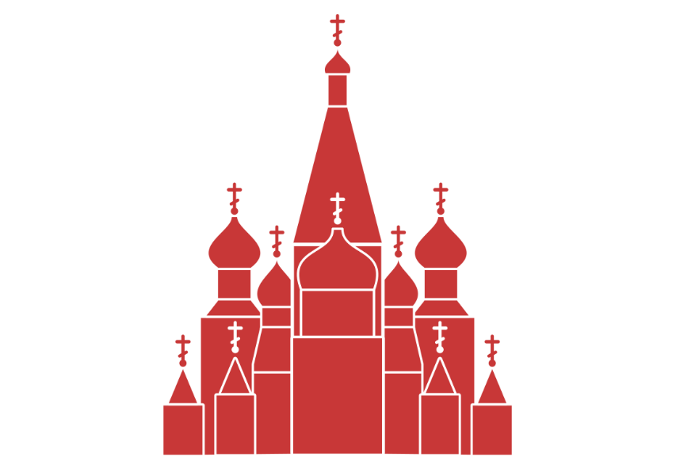

Como dito no início, o design gráfico trabalha com dois tipos de arquivos, bitmaps comumente chamados de imagens, fotos ou rasters, e vetores. Vetores possuem mais flexibilidade na edição por serem compostos de caminhos independentes que podem ser editados livremente, enquanto imagens são mapas de pixels, ou seja, são compostas por diversos pontos. Cada tipo de arquivo tem sua finalidade e sua forma de trabalho particular.
Existem várias operações que um designer precisará fazer com imagens dentro de um aplicativo de desenho vetorial. Algumas vezes receberemos arquivos e teremos que trabalhar sobre eles e nem sempre esses arquivos virão vetorizados de forma que possam ser editados, e outras vezes ainda precisaremos inserir imagens em nossos trabalhos, de forma que é imprescindível saber manipular imagens. Praticamente todos os softwares de desenho vetorial possuem ferramentas para manipular bitmaps.
Estes tópicos abordam o uso de bitmaps em softwares vetoriais, mas teremos capítulos inteiros sobre bitmaps ao final do curso.
No início desta apostila falamos que o processo de converter um vetor em imagem se chama rasterizar, e o oposto se chama rastrear, são estes dois processos que começaremos a estudar agora. A conversão de uma imagem em vetor pode ser feita utilizando um recurso do software, que é o que chamamos Rastrear, ou pode ser feito manualmente que é o que chamamos Redesenhar.
O termo redesenhar é por vezes utilizado como sinônimo de retrabalho, no entanto em gráficas e agências é muito comum utilizar esse termo para se referir a desenhar sobre uma imagem.
Imagine o seguinte cenário: um cliente chega até você com uma logomarca e quer que você altere alguns elementos nela, no entanto o que ele te entrega é uma imagem .png ou .jpg. Você pede a ele o arquivo editável, mas ele não o tem. O que deve ser feito? Redesenhar. Você inserirá essa imagem no Inkscape, CorelDraw ou Illustrator e desenhará sobre ela. É claro que é possível rastreá-la, mas isso não é aconselhável, pelos seguintes motivos:
1. Os caminhos gerados costumam ter uma quantidade excessiva de nós tornando o arquivo pesado e difícil de se manipular.
2. O resultado de um rastreio perde fidelidade à imagem original.
3. Cores transitórias são perdidas.
4. Rastreios não podem manipular gradientes.
5. Rastrear para editar é considerada uma má prática de trabalho.
Vamos treinar o redesenho?
Neste exercício refaremos um modelo vetorial simplificado da magnífica Catedral de São Basílio. Com a imagem fornecida por seu instrutor, insira-a no Inkscape e utilize as ferramentas retângulo e bézier para redesenhar a imagem abaixo.
As imagens utilizadas neste curso devem encontrar-se na pasta fornecida por seu instrutor, caso não seja possível obtê-la dessa forma você poderá baixá-la na sessão de downloads em:
www.jorgesouza.com.br/design/downloadsNa pasta de imagens do curso você encontrará a imagem com o nome SanBasilio.png.
Como você já conhece a maioria dos recursos necessários do Inkscape não é necessário descrever o passo-a-passo para efetuar o redesenho, no entanto posso te instruir a utilizar formas básicas (ou primitivas) e convertê-las em caminhos conforme for desenhando. Neste caso ainda, você pode definir uma espessura padrão para todos os contornos brancos.
Salve o resultado final em sua pasta com o nome São Basílio.svg